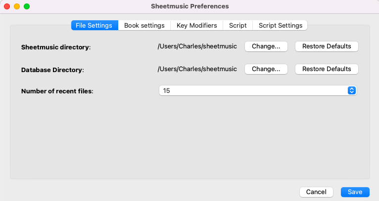
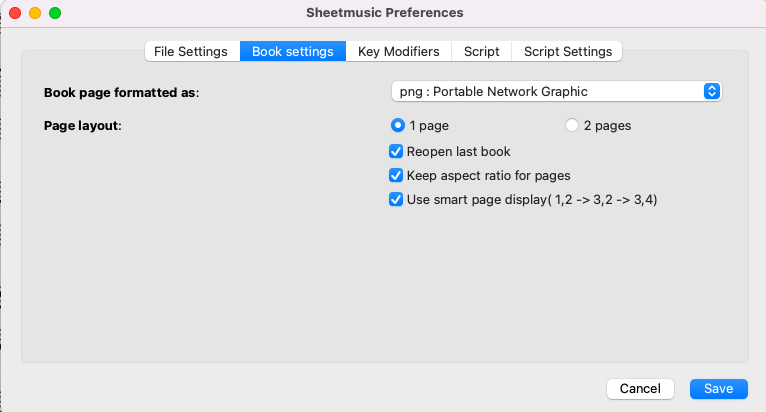
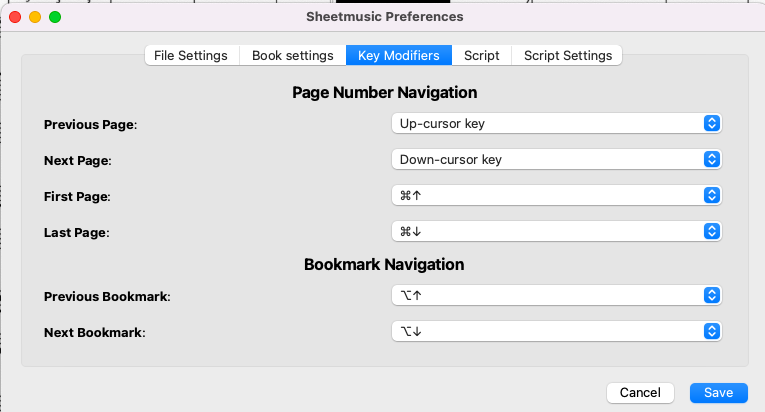
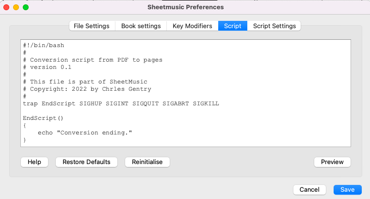
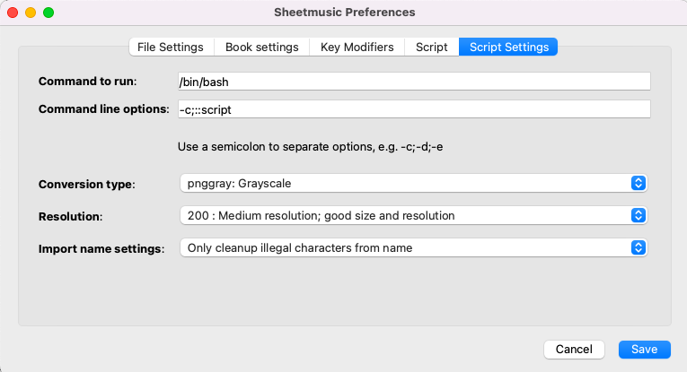

SheetMusic
Preferences are global to all books and provides important setting and default settings for books. A book can
have some specific setting stored for it, such as one or two page display. All settings are stored in an SQLITE3
database in the sheet music directory.

- Sheetmusic directory- Choose a directory where all of the sheetmusic books
will be stored.
- Database directory - Choose a directory where to store the database that hold informatio about all the music
in your library. This is usually the same directory as the sheetmusic directory.
- Number of recent files - In the program, it will remember all the files you have previously opened. You can
display from 5 to 20 of the recent files.

- Book page formatted as - Each imported page from a PDF is read by Ghostscript and converted
into a format that is used by the SheetMusic program. You may pick one of the supported formats here.
- png - the default format as it is lossless and provides good quality.
- jpeg - This is a lossy format that produces very small files but with loss of detail.
- tiff - an older image format that produces good quality images.
- bmp - Bitmapped graphic format. Usually a larger file format and not really recommended.
- One page / Two pages - the default of either one page or two pages at a time. This can be changed per-book
and will be remembered. Set this for the default.
- Reopen last book - It will remember your last book and reopen it when the program starts again.
- Keep aspect ratio for page - pages can distort if you don't keep the aspect ratio. However. some pages do
look fine when they simply fill the monitor. This can be changed per-book.
- Use smart page display - When you have two pages displayed side-by-side, smart page display will only change
on page at a time and will briefly changed the border color. If you are looking at pages 3 (left) and 4
(right), flipping the page will show you 5 (left) and 4 (right). The next page flip will show you 5 (left)
and 6 (right). This lets you "flow" between pages easily. With out this turned on, you will get pages 3 and
4, then 5 and 6. This can be changed per-book. Note that this is only effectve for 2 page displays.

Key modifiers allow you to navigate through the document. The standard document naviations are:
- Previous page
- PgUp - standard page up on your keyboard.
- Up-cursor key - A good alternative if you don't have a page up key or if the cursor keys are more convienent.
- Left-cursor key - another good alternatie to page up.
- i - a key often used in games for navigation
- Next Page
- PgDown
- Down-cursor key
- Right-cursor key
- k - a key often used in games for navigation
- First Page - Move to the very first page in the book.
- CMD-Up - Combination of command key and up arrow key.
- CMD-Left - Combination of command key and left arrow key
- Last Page- Move to the last page in the book
- CMD-Down - Combination of command key and down arrow key.
- CMD-Right - Combination of command key and right arrow key
- Previous Bookmark - Move to the previous bookmarked page.
- Alt-Up - Combinatino of the alt (or control) key and up arrow key.
- Alt-left - Combination of the alt (or control) key and left arrow key.
- j - a key often used in games for navigation
- Next Bookmark - Move to the next bookmarked page.
- Alt-down - Combinatino of the alt (or control) key and down arrow key.
- Alt-right - Combination of the alt (or control) key and right arrow key.
- k - a key often used in games for navigation

This is the script that will be run to convert a PDF to a PNG. Variables will be replaced by the program before
it is run. The script may be altered for the system you use in order to work. This has been tested on a MacOS
sytem. The variables are:
- {{debug-state}} - Show the state of the debug request in the output screen.
- {{debug}} - This is will be replaced with the string 'echo ' or a blank string in the script.
- {{source}} - The full path to the source PDF file.
- {{target}} - This is the target directory for the conversion. This will consist of the sheetmusic directory with the final book name you entered (e.g.
'/your/home/sheetmusic/new sheetmusic').
- {{device}} - What output "device" ghostscript will use? This is set in the Conversion type drop-down box.
- {{dpi>> - The resolution you picked from the resolution drop-down.
- {{name}} - The name you imput for this book. It will default to the filename of the source.
- {{type}} - The type of output the file is. This is selected in the Book settings,
format
 Script settings are used to actually run the script and contains values used in Ghostscript.
- Command to run: - This can be any bash compatible shell script. (Windows is not yet supported.
- Command line options: - after the 'Command to run', what options should follow it. Separate options with a ;. The script itself, or it's location in the file system, can be inserted by a :::script variable.
- Conversion type: - Dropdown selection of two supported conversions that will be passed to Ghostscript
- png16m: 24-bit RGB color
- pnggray: Grayscale
- Resolution - this will determine the output resolution for the conversion from PDF to the converstion type selected.
- 300 - Highest resolution. This may cause problems displaying some very dense PDF images.
- 200 - Medium resolution. This should be usable for all PDFs and gives good resolution and file size.
- 150 - Lower resolution. This should give usable resolution and smallest file size
- Import name settings- How to cleanup characters from the input filename for use as a directory. This helps to protect directory creation.
- Only cleanup illegal charaters from name - The name will have newlines, multple blanks and invalid characters replaced.
- Use filename with minimum cleanup
- Use filename with maximum cleanup and Title Name
- Use PDF to fill in name - This feature requires PyPDF2 be installed in the system. It will read the PDF file, get the total number of pages and the book title from the PDF. The name will then be cleaned up as much as possible.